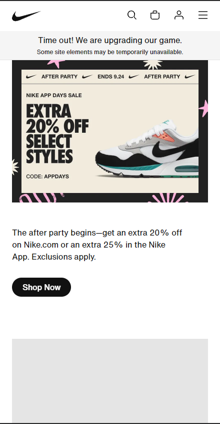
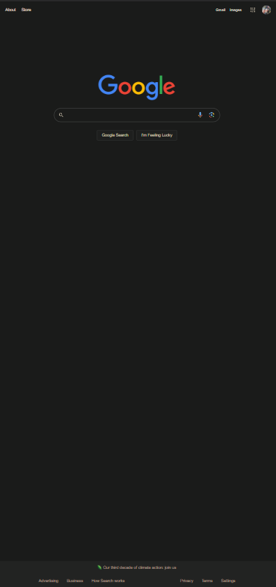
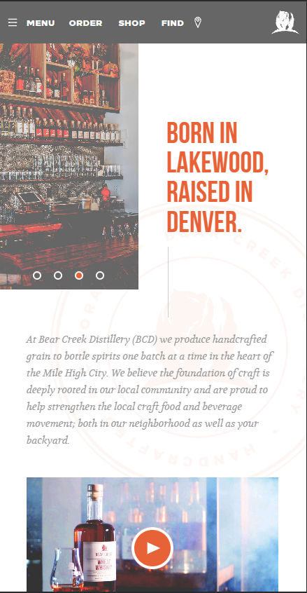

Rule of Thirds
Creates a visually pleasing and balanced website, controlling the flow of the content placement
Hick's Law
Presenting too many choices to the user will increase the decision making time
White Space and Clean Design
White space helps declutter the look of the design, making it cleaner and easier to read. White space is seen as elegant and simple
